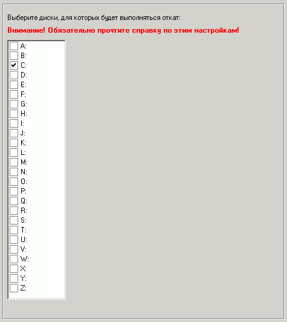

Здесь необходимо выбрать логические диски, для которых будет выполняться авто-восстановление после каждой перезагрузки (откат).
Откат не выполняется на съемных или сетевых дисках.
Внимание! Рекомендация: на выбранных дисках должно быть не менее 2 ГБ свободного места!
Если откат уже включен и активен на клиентских машинах и вы желаете внести изменения на этой странице, то после их сохранения необходимо отключить откат на две перезагрузки с сохранением изменений через программу оператора!
Это связано с тем, что клиентские настройки для компьютера применяются только после перезагрузки клиентской машины, а также для их сохранения необходимо временное отключение отката. В противном случае изменений не произойдет.
Проконтролировать текущее состояние отката всегда можно через программу оператора.